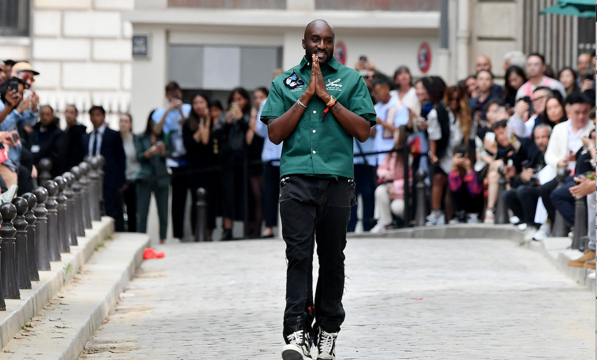
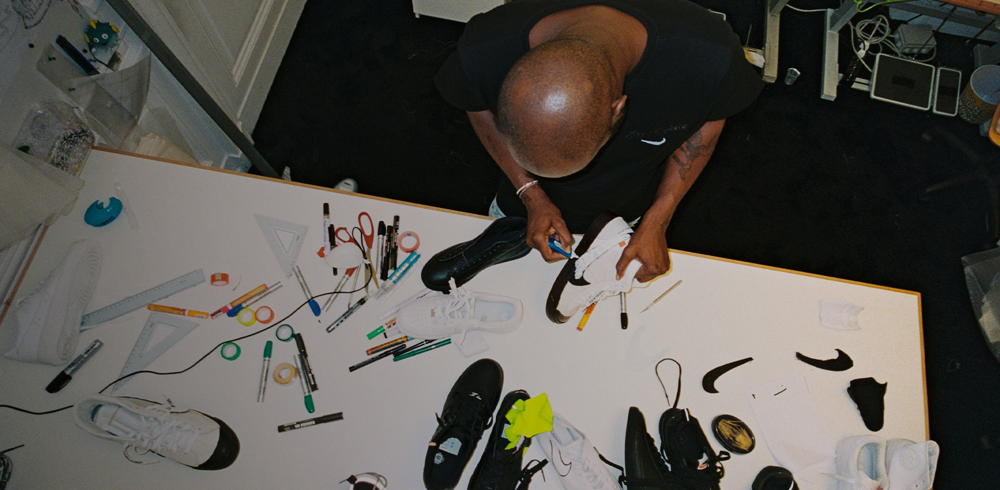

"Beginning of his journey"

After high school, he enrolled at the University of Wisconsin-Madison where he studied civil engineering. During his studies, he became actively interested in graffiti art, DJing culture, and t-shirt design. His architectural education at Illinois, under the tutelage of Iranian architect professor Zaha Hadid, was an important milestone in the development of his unique perspective on design.
Virgil Abloh was born on September 30, 1980 in Rockford, Illinois to Ghanaian immigrant parents. His father ran a paint company and his mother was a seamstress. It was she who first introduced Virgil to the basics of cutting and sewing. Abloh had a passion for skateboarding and hip-hop since childhood, which laid his interest in street culture.

"VIRGIL ABLOH IS SAVING LUXURY"
"VIRGIL ABLOH - CREATIVE ADVICE"
Brotherhood with Kanye West™
In 2009, Abloh began an internship at Fendi in Rome, where he fell in with Kanye West. This internship became the starting point of his fashion career. Fendi management later labeled them as “the most unusual and promising interns.” They used Fendi's signature canvases to print graffiti and experimented with the concept of luxury and street art.
After the internship, Kanye offered Virgil the position of creative director at his company Donda. One of Abloh's first landmark works was the album cover artwork for My Beautiful Dark Twisted Fantasy, created in collaboration with George Kondo. This work cemented Virgil's reputation as a versatile creator.
In 2011, Virgil, along with Kanye and their team, made it to Paris Fashion Week as an “outsider”. Their photos in brightly colored streetwear made the rounds on fashion blogs and became a symbol of street fashion breakthrough.


"I’m not a designer, I’m more of a narrator."
Virgil Abloh™
"You have to work hard, but don’t be afraid to have fun while doing it."
Virgil Abloh™
"My legacy is not about me; it’s about opening doors for others."
Virgil Abloh™
"I want to blur the lines between high fashion and streetwear."
Virgil Abloh™
"Cultural movements are bigger than brands."
Virgil Abloh™
“Off-White: From Idea to Success.”
The idea and creation of Pyrex Vision
Before creating Off-White, Virgil Abloh launched his first project, Pyrex Vision, in 2012. This brand was based on recycling basic sportswear, especially Ralph Lauren shirts and shorts. Abloh bought clothes in bulk for a low price, added graphic prints (the word “Pyrex” and the number 23, referring to Michael Jordan), then sold them at a much higher price.
However, the brand drew criticism for its ethics of recycling other people's products, and in 2013 Abloh decided to shut down Pyrex Vision to focus on creating a new concept design.


The birth of Off-White
Abloh founded the brand Off-White c/o Virgil Abloh™ in 2013. He described it as “a bridge between the street and the catwalk”. The name “Off-White” symbolized something between black and white - a space of uncertainty and experimentation.
The brand was recognized for its unique approach to design. Off-White combined elements of high fashion quality fabrics, sophisticated cuts with street culture graphics, logos, functional elements.
Off-White Characteristics:
I.Use of quotation marks: Abloh added quotation marks to words to create a new interpretation of objects. For example, “SHOELACES” on shoelaces emphasized their functionality and irony.
II.Diagonal stripes: Symbols borrowed from road signs became recognizable around the world.
III.Ironic inscriptions: Phrases like “FOR WALKING” on shoes or “SCULPTURE” on bags created multiple layers of perception.

First success and influence on street fashion
The brand began to gain attention with collections inspired by architecture, graphic design and contemporary art. For example, Off-White's early collection was called Gray Area, referring to uncertainty and the blending of genres.
In 2015, Off-White was a finalist for the LVMH Prize, putting Abloh on the global stage. It was a rare case of a new street fashion brand achieving recognition in the luxury segment.


“The death of Virgil Abloh: a tragic loss for the world of fashion and culture”
Virgil Abloh passed away on November 28, 2021, at the age of 41 after a two-year battle with a rare form of cancer, cardiosarcoma (a particularly aggressive tumor of heart tissue). His illness was diagnosed in 2019, but he chose not to publicize the fact, continuing to perform at the highest level.
Fighting the disease in silence
Virgil was treated in strict confidentiality. Despite a tough battle with cancer, he remained incredibly active:
I.Continued to serve as art director for Louis Vuitton's men's line.
II.Worked on the new Off-White collections.
III.Participated in numerous collaborations including projects with Nike, Mercedes-Benz and others.
IV.Curated exhibitions and events, and gave lectures to inspire young people.
His team and close friends later said that Abloh strived to leave as much creativity as possible as a legacy, realizing that his time might be short.


Consequences and the world's reaction
The news of his death came as a shock to everyone from fashion experts to fans of his work. Abloh continued to create until the very end, showing no signs of weakness.
Reactions from colleagues and friends:
I.Bernard Arnault, the head of LVMH, called Virgil not only a brilliant designer but also a man with a great soul.
II.Kanye West, his close friend and associate, dedicated a prayer to him at his Sunday Service.
III.Kim Jones (Dior): “He changed fashion for an entire generation, inspiring young people.”
IV.Serena Williams, Abloh's client and friend, shared a touching story of how he supported her in difficult moments.
Memory and legacy
A few days after his death, Louis Vuitton held a show of his last collection in Miami. The show was called “Virgil Was Here” and was a tribute to his contribution to fashion. The runway was decorated in the shape of a huge red hot air balloon, symbolizing his desire to go above and beyond.


Abloh's testament
Virgil always emphasized that his mission goes beyond fashion. His words “My job is to open doors for others” became the motto of his legacy. After his death, his family founded the Virgil Abloh™ Post-Modern Scholarship Fund, which helps young designers from underrepresented communities receive an education and launch their careers.